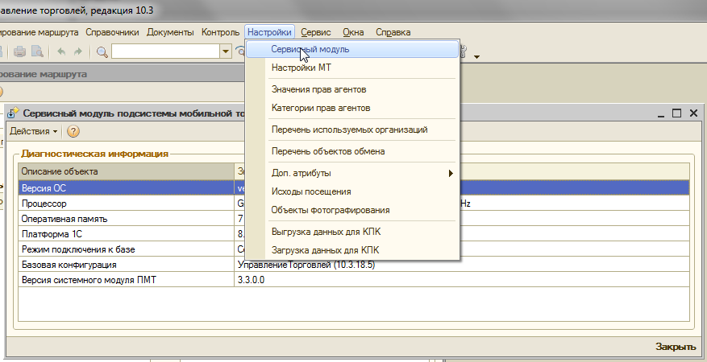
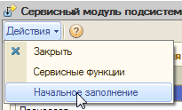
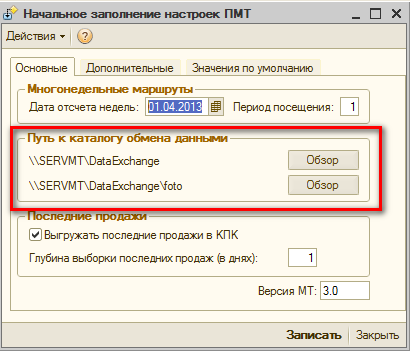

\\SERVMT\C$\Program Files (x86)\System Technologies Ltd\
здесь СОД и Репликация
Впапке репликации отредактировать файлы:
rpl_1C_exhange.js
rpl_1C_exhange_settings.xml
Строки:
<Path>File=\"C:/MT/тест\";</Path>
<Path>Srvr=\"Server1C:1642\";Ref=\"1CBase2013_UT_MT\";</Path>
conn = entConn.connect("File=\"C:/MT/тест\";Usr=\"мобильная торговля\";Pwd=\"\"");
conn = entConn.connect("Srvr=\"Server1C:1642\";Ref=\"1CBaseUT_MT\";Usr=\"мобильная торговля\";Pwd=\"\"");
Но все же лучше делать через местер настройки:
_rplWizard.bat
Далее настроить в 1С:


Настроить путь к папкам:
